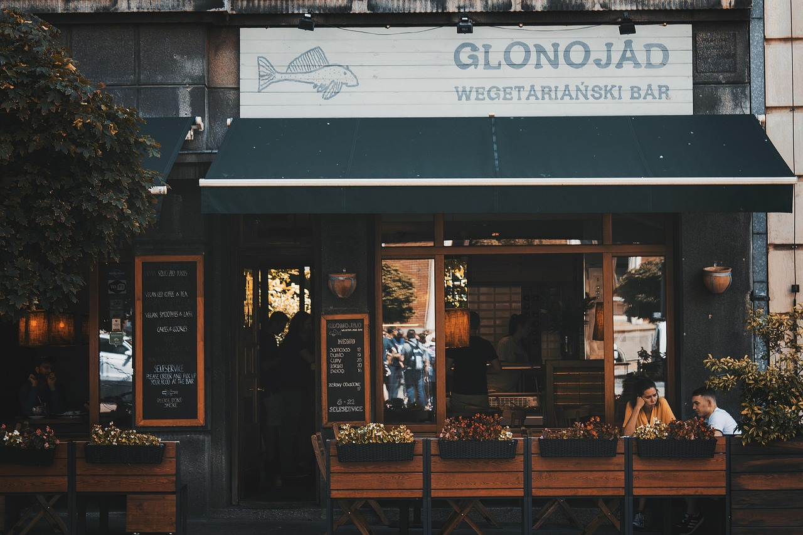
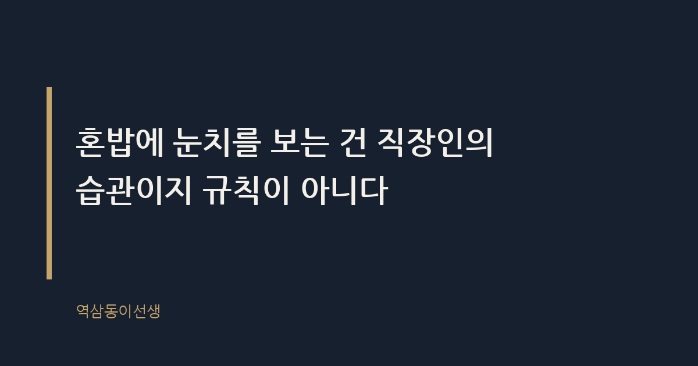
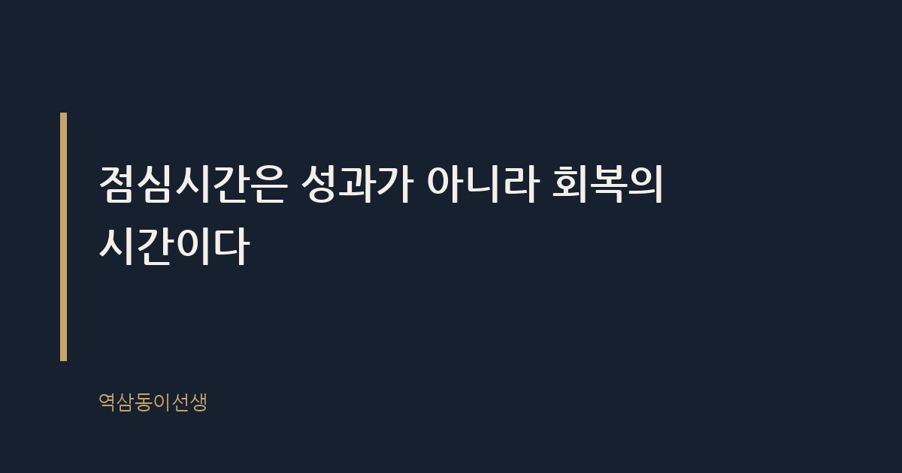

주제 점심 혼밥, 눈치 볼 필요 없는 이유 (evergreen / office)
제목 후보
메타 설명 점심 혼밥에 유독 눈치가 보이는 이유와 직장 문화의 구조적 배경, 실제로 써먹을 수 있는 대처 문장까지 한 번에 정리했다.
라벨 점심혼밥, 직장생활, 회사생활, 혼밥러, 워라밸, MZ직장인, 점심시간활용법, 혼밥눈치, 직장인점심시간, 회사문화
실용 자산 예시 문장 모음 — 눈치 보이는 순간 바로 쓸 수 있는 대처 문장이 필요한 주제라 상황별 예시 표를 넣었다
발행 전 팩트체크
이미지 (Blogger 편집기에 드래그해 넣으세요)



역삼동 뒷골목 백반집에서 혼자 점심을 먹는데, 옆 테이블에 앉은 사원증 찬 직원이 상사로 보이는 사람이 문을 열고 들어오자 황급히 휴대폰을 집어 들었다. "네 팀장님, 지금 통화 괜찮습니다." 밥은 반도 못 먹은 채였다. 상사는 그냥 포장을 사러 들른 것뿐이었는데, 그 직원은 혼자 밥 먹는 모습을 들킨 게 민망했던 모양이다.
점심 혼밥은 눈치 볼 일이 아니다. 오히려 회사에서 오래 버티고 성과를 내는 사람일수록 점심시간을 혼자 쓰는 경우가 많았다. 직장인이 혼밥에 눈치를 보는 건 오래된 습관일 뿐, 꼭 지켜야 할 규칙은 아니다.
점심 혼밥이란 동료나 팀원 없이 혼자 식사를 해결하는 것을 말한다. 간단한 행동인데도 유독 한국 회사에서 눈치가 보이는 이유는, 점심시간이 업무 외 시간이 아니라 '관계를 관리하는 시간'으로 오랫동안 취급돼 왔기 때문이다.
팀장이 "오늘 점심 뭐 먹지?" 하고 물으면 자리에 있던 사람은 자동으로 따라나서야 했다. 안 따라나서면 "저 사람 뭔가 불편한가" 하는 추측이 붙었다. 식사 자리는 보고와 눈도장, 때로는 뒷담화까지 오가는 비공식 회의실이었다. 그 자리에 안 끼는 사람은 정보에서 소외되거나, 소외를 자처한 사람으로 읽혔다.
혼밥족이란 점심이나 저녁을 혼자 해결하는 사람들을 가리키는 말이다. 최근 몇 년 사이 구내식당과 회사 주변 식당의 풍경이 눈에 띄게 달라졌다. 1인 좌석이나 바 형태의 좌석을 따로 두는 식당이 늘었고, 편의점 도시락 코너에 혼자 서서 먹는 직장인도 많아졌다. 직장인 대상 설문에서도 점심을 혼자 해결한 경험이 있다고 답한 비율이 절반을 훌쩍 넘는 것으로 알려졌다.
이 변화가 보여주는 건 단순하다. 혼밥은 더 이상 소수의 선택이 아니라 다수가 거쳐 가는 일상이 됐다는 것이다. 다만 숫자가 늘었다고 눈치가 함께 사라진 건 아니다. 행동은 바뀌었는데 문화는 천천히 쫓아오는 중이다.
이런 눈치가 생긴 데는 나름의 배경이 있다. 과거 회사 조직은 집단의 결속력으로 성과를 내는 구조였기 때문이다. 공장과 사무직이 같은 시간에 출근하고 같은 시간에 밥을 먹던 시절, 점심은 조직의 리듬을 맞추는 의식이었다. 같이 밥을 먹는 사람이 곧 같은 편이었다.
조선의 선비들이 홀로 산책하며 생각을 정리하던 시간을 게으름이 아니라 수양으로 여겼던 것처럼, 혼자 있는 시간에는 본래 다른 쓸모가 있다. 하지만 회사라는 조직은 오랫동안 혼자 있는 시간을 소외나 불편함의 신호로 읽어왔다. 지식노동으로 일하는 방식이 바뀐 지금도, 점심시간의 문화만은 산업화 시대의 집단 리듬에 머물러 있는 셈이다.
마케팅 조직을 맡았을 때 유심히 봤던 장면이 있다. 성과가 꾸준히 좋았던 팀원들 중 몇몇은 일주일에 두세 번은 혼자 밥을 먹었다. 어떤 날은 책을 들고, 어떤 날은 그냥 창밖을 보며 먹었다. 처음엔 "저 친구 혹시 팀에 적응을 못 하나" 싶었는데, 알고 보니 그들에게 혼밥은 오전 회의에서 쌓인 정보를 정리하고 오후 업무를 준비하는 자기만의 루틴이었다.
반대로 늘 누군가와 함께 밥을 먹어야 안심하던 직원들은, 식사 자리에서 들은 이야기에 쉽게 휘둘렸다. 누가 승진했다더라, 어느 팀이 조직개편 대상이라더라 하는 소문에 오후 업무 집중도가 흔들리는 걸 여러 번 봤다. 혼자 먹는 시간을 가진 사람들은 그 소음에서 한 걸음 떨어져 있었다.
당시 팀에 있던 신입 마케터 한 명이 떠오른다. 입사 초기엔 선배들을 따라다니며 밥을 먹더니, 몇 달 지나자 일주일에 하루 이틀은 혼자 테라스에서 샌드위치를 먹기 시작했다. 이유를 물었더니 "오전에 들은 피드백을 소화할 시간이 필요해서"라고 했다. 그 친구는 지금 다른 회사에서 팀장으로 일하고 있다. 혼자 먹는 밥이 눈치 없는 행동이 아니라, 자기 일을 책임지는 방식이었던 셈이다.
이쯤 되면 혼밥은 사회성 부족의 증거가 아니라 오히려 자기 관리의 기술에 가깝다. 점심시간을 회복과 정리의 시간으로 쓰는 사람과, 관계 유지의 시간으로 쓰는 사람의 오후 업무 밀도는 확실히 달랐다.
여기서 한 가지는 분명히 짚고 넘어가야 한다. 혼밥이란 스스로 선택해서 혼자 먹는 것이고, 아싸(아웃사이더)란 원해서가 아니라 관계에서 밀려나 혼자가 된 상태를 말한다. 둘은 겉모습은 비슷해도 본질이 다르다. 전자는 자기 시간을 설계한 결과고, 후자는 관계의 결핍이 낳은 결과다.
문제는 주변 사람들이 이 둘을 구분하지 않고 같은 눈빛으로 본다는 점이다. 혼자 밥 먹는 사람을 보면 반사적으로 "저 사람 무슨 일 있나"부터 떠올린다. 그런데 정작 당사자는 그날 회의가 길어서, 혹은 오후에 집중할 일이 있어서 혼자 먹는 걸 택한 것뿐일 수 있다. 자신이 혼밥을 하는 이유를 스스로 분명히 알고 있다면, 남의 시선이 섞어 보내는 추측은 신경 쓸 이유가 없다.
그렇다고 "그냥 신경 쓰지 마라"는 말은 현실에서 별 도움이 안 된다. 실제로 부딪히는 순간에 바로 쓸 수 있는 말을 몇 가지 정리해봤다.
| 상황 | 이렇게 말한다 | 이건 피한다 |
|---|---|---|
| 팀장이 "왜 혼자 먹어?"라고 물을 때 | "오늘은 머리 좀 식히려고요, 다음엔 같이 가요" | "그냥요..." (얼버무리며 눈 피하기) |
| 동기가 "같이 안 먹어서 서운해"라고 할 때 | "요즘 생각 정리할 게 많아서 그래, 내일은 꼭 같이 먹자" | 계속 핑계만 대고 약속은 안 지키기 |
| 회식 다음 날 혼자 먹고 싶을 때 | "어제 과식해서 오늘은 가볍게 혼자 먹으려고" | 말없이 자리를 피해 눈치 싸움 만들기 |
| 후배가 걱정스러운 눈으로 볼 때 | "혼자 먹는 게 편해서 그래, 신경 안 써도 돼" | 괜히 더 설명하며 미안해하기 |
핵심은 이유를 짧게 말하고 다음 약속을 흘려두는 것이다. 변명처럼 길게 설명할수록 상대는 더 캐묻는다. 짧고 담백하게, 그리고 여지를 남기면 대부분 그 자리에서 끝난다.
일본에는 '오히토리사마(お一人様)'라는 말이 있다. 혼자 식당에 가고, 혼자 여행을 다니고, 혼자 영화를 보는 사람을 가리키는 표현인데, 부정적인 뉘앙스보다는 오히려 독립적이고 자기 시간을 아는 사람이라는 긍정적인 의미로 쓰이는 것으로 알려졌다. 도쿄의 라멘집이나 규카쓰 전문점에 가보면 애초에 1인용 바 좌석이 메인인 곳이 많다. 혼자 온 손님을 위한 칸막이까지 있는 식당도 흔하다.
이런 구조가 가능했던 이유는 혼자 밥을 먹는 행위를 '처리해야 할 불편'이 아니라 '존중해야 할 선택'으로 받아들였기 때문이다. 우리나라 회사 주변 식당들이 최근 몇 년 사이 1인 좌석을 늘리기 시작한 것도 비슷한 흐름이다. 식당의 메뉴판과 좌석 배치가 바뀌는 속도가, 사람들의 머릿속 눈치가 사라지는 속도보다 빠른 셈이다. 건물은 바뀌었는데 마음이 못 따라가는 상황이랄까.
혼밥에 죄책감을 느끼지 않으려면, 즉흥적으로 하기보다 미리 자기만의 규칙을 정해두는 편이 낫다. 다음은 실제로 효과를 봤다는 사람들에게 들은 방법이다.
점심 혼밥에 눈치가 보이는 이유는 결국 '함께 있어야 소속감이 증명된다'는 낡은 공식 때문이다. 하지만 오후 업무의 질을 좌우하는 건 누구와 밥을 먹었는지가 아니라 오전에 쌓인 피로를 얼마나 정리했는지다. 혼자 먹는 밥 한 끼로 오후 세 시간의 집중력을 지킬 수 있다면, 그건 사회성 부족이 아니라 효율이다.
얼마 전 딸 써니의 학교 급식 이야기를 들을 일이 있었다. 친한 친구가 결석한 날, 써니는 처음으로 혼자 밥을 먹었는데 의외로 편했다고 했다. "누구 눈치 안 보고 좋아하는 반찬만 먹을 수 있어서 좋았어." 아이도 아는 걸 어른들은 자꾸 복잡하게 만든다. 혼자 먹는 밥이 꼭 외로운 밥은 아니다.
씁쓸하면서도 꽤 인상적인 건, 정작 혼밥을 가장 자유롭게 하는 사람들은 조직에서 가장 바쁜 사람들이라는 점이다. 그들은 점심시간까지 관계에 쓸 여유가 없다는 걸 알기 때문에, 그 시간을 자기 것으로 정확히 돌려받는다.
Q. 혼자 밥 먹다가 괜히 휴대폰 꺼내 바쁜 척한 적, 저만 있는 건 아니죠?